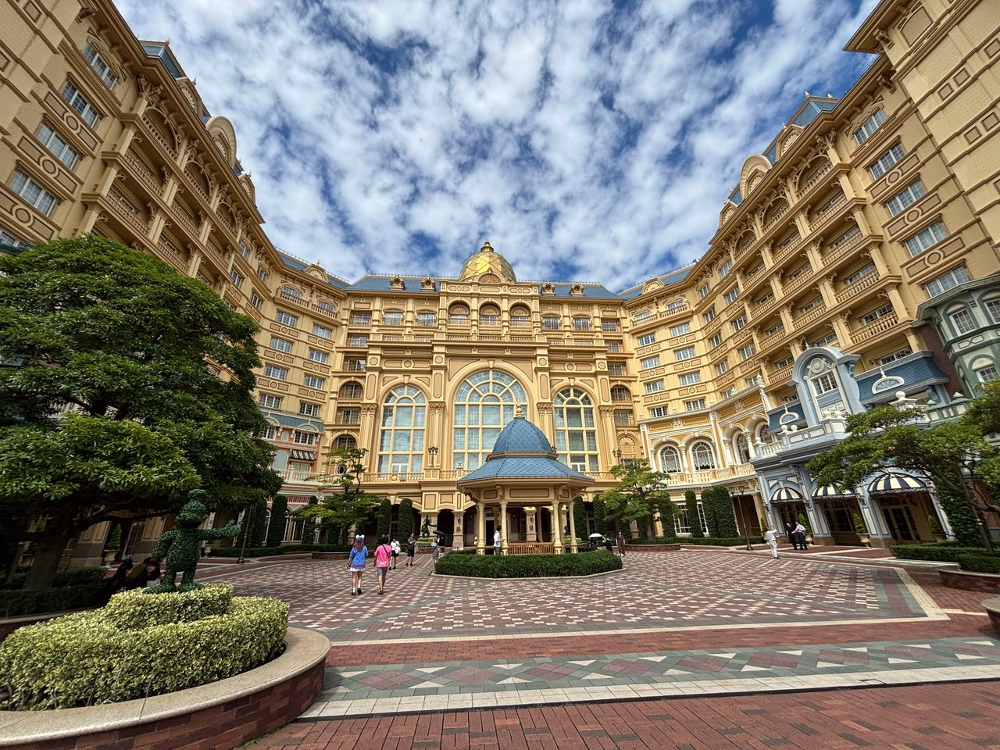
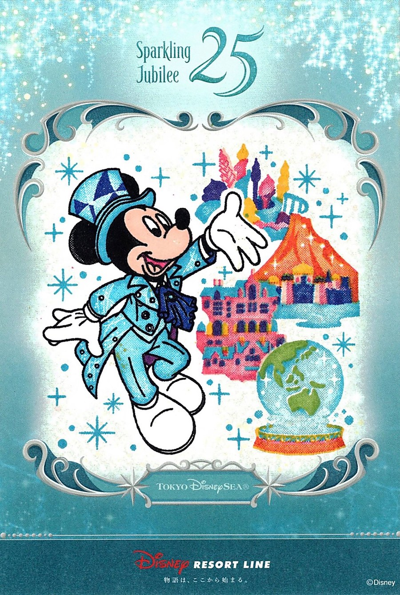

SCENERY / 風景
同じ場所を、違う時間に。
建物の細部、夕暮れの空、水面の光。昼と夜のパークの楽しみ方。
昼と夜の景色を読む ↗Disney Discovery
来園の準備から、歩いて見つけるパークの景色まで。
舞浜を楽しむガイドと、てるの写真・体験の記録。

02 / EXPLORE THE PARKS
少し足を止めて見たい景色と、
パークを楽しむためのヒント。

03 / PERSONAL RECORDS
何気ない日も、思い出に。
体験日 終了したイベントの記録
模試帰りに、リゾートラインのスタンプラリーへ。
2回目の挑戦でうまく押せた、シー25周年の一枚です。
25周年版は2026年10月31日に終了しています。
当時の写真と体験を残した記録です。
01 / PLAN YOUR VISIT